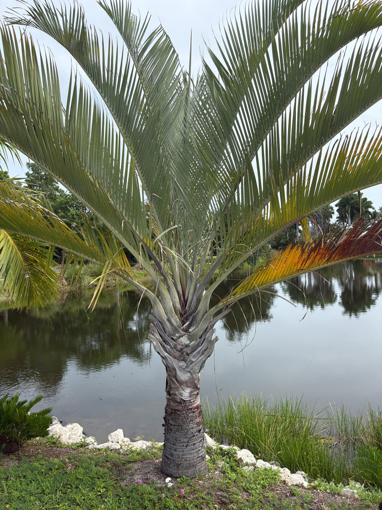

- The triangle is not just a name — if you slice the upper trunk horizontally, the cross-section is a genuine triangle. The leaf bases grow in three vertical ranks spaced exactly 120 degrees apart, stacking into a three-sided column that you can feel as well as see.
- Look closely at the leaf bases on the upper trunk: they are covered in a dense, velvety, reddish-brown felt called tomentum — coarse to the touch and striking up close against the pale gray trunk below.
- Fewer than 1,000 individual Triangle Palms are believed to survive in the wild — the entire natural population fits within a small patch of transitional forest in Madagascar's Andohahela National Park. The palm is now far more common in Florida landscapes than it is on its home island.
- For years, nearly every seed produced by the wild population was harvested for the international nursery trade, leaving almost nothing behind for natural regeneration. The palm's listing on CITES Appendix II eventually put limits on that export — a rare case where ornamental demand nearly consumed an entire wild species.
The Triangle Palm is endemic to a remarkably small area at the southern tip of Madagascar — a narrow transitional zone between the island's humid eastern rainforest and its dry spiny forest to the west, on the slopes of Andohahela National Park. It grows on steep mid-slopes and along seasonal streambeds on stony soils, at elevations from roughly 80 to 600 meters.
The entire wild range can be crossed in a short drive.
It was formally described in 1933 by botanist H. Jumelle under the name Neodypsis decaryi, then reclassified into the genus Dypsis by Beentje and Dransfield in their landmark 1995 work The Palms of Madagascar. Plants of the World Online (Kew) now places it in the genus Chrysalidocarpus, though Dypsis decaryi remains the name in wide horticultural use.
The species epithet honors Raymond Decary, the French naturalist who first collected it.
In cultivation it has spread throughout the world's tropical and subtropical regions. In the United States it is grown in southern Florida, southern Texas, and Hawaii, where its sculptural silhouette and drought tolerance have made it a favored landscape specimen.
- The Triangle Palm occupies one of the stranger ecological niches in the palm world. Its native habitat is a transition zone — not quite rainforest, not quite desert — where seasonal rainfall is unpredictable and soils are thin and stony. That background explains why the palm handles Florida's sandy, nutrient-poor soils and periodic drought as well as it does.
- The conservation picture is sobering. With an estimated wild population of around 1,000 mature trees, the Triangle Palm qualifies as Vulnerable on the IUCN Red List — yet it grows by the tens of thousands in subtropical landscapes worldwide.
- Cultivating specimens like this one is a genuine act of ex-situ conservation, keeping the species' genetic lineage alive well beyond its shrinking native range.
- The pressure in Madagascar has come from two directions: fire in the dry season and seed collection for the international nursery trade. At one point, essentially the entire annual seed crop was being exported, leaving nothing for natural regeneration. A CITES Appendix II listing has since imposed controls on that trade.
- One small structural detail rewards a closer look: the upper leaf bases are thickly felted with a rust-colored tomentum — a dense, velvety coating that covers the sheaths and petioles where they wrap the trunk.
In its native Andohahela habitat, the Triangle Palm has documented relationships with local wildlife. Ring-tailed lemurs and the Madagascar Black Parrot have been observed feeding on the fruit's fleshy mesocarp, and bees and flies visit the flowers at anthesis.
Research on the palm's reproductive biology confirmed that the honey bee Apis mellifera is its most effective pollinator — though none of the flower visitors are specialists restricted to this species.
In Florida cultivation, wildlife value is more modest. The inflorescences attract generalist pollinating insects when in bloom. Because this is a non-native species with no evolutionary history alongside Florida's fauna, it does not function as a larval host for local butterflies or moths. Visitors looking for the park's best pollinator habitat will find it in the native plantings.
Branched inflorescences up to about five feet long emerge from the axils of the lower leaves. Each inflorescence bears both male and female flowers on the same tree (monoecious), and is protandrous — meaning the male flowers open and shed pollen before the female flowers on that same inflorescence become receptive. This timing encourages cross-pollination between individuals.
Flowers are small and pale yellow; bloom typically occurs in spring.
Small, round to ovoid drupes about one inch in diameter, maturing from green through creamy white; some sources describe them as ripening nearly black. Each fruit contains a single seed. The fruit is not a food source.
Pinnately compound, reaching up to ten feet long, with only a short petiole of about one foot. The leaves grow almost upright from the trunk and arch gracefully near their tips. Leaflets are linear and gray-green to blue-green.
The defining feature is their arrangement: leaf bases grow in three distinct vertical ranks, each rank separated by 120 degrees, creating the triangular cross-section the palm is named for.
Solitary, stocky, and dark gray — notably thicker in proportion to its height than most feather palms, with a diameter that can reach 12 to 20 inches at maturity. The trunk is ringed with neat horizontal leaf-base scars and may show a slightly chalky surface bloom.
There is no crownshaft; the overlapping, cupped leaf bases at the top of the trunk form the triangular collar that gives the species its character. Those upper leaf bases are coated in a dense, reddish-brown tomentum — a velvety felt texture you can see and feel.
The silhouette is unmistakable from a distance — fronds erupting from three distinct points rather than from a single circular crown, giving the whole top of the palm a three-cornered shape. For the most dramatic view, stand directly beneath the palm and look straight up: the canopy resolves into a perfect three-pointed star.
Step closer and look down at the top of the trunk: the stacked, cupped leaf bases form a clear triangular collar you can count the corners of. Run a hand near those upper leaf bases and you will feel the dense, rust-colored tomentum — a coarse, velvety felt coating the sheaths. The trunk itself is stouter than you might expect, dark gray, and neatly scarred where old fronds have dropped.
In spring, look for pale yellow flower clusters emerging from low in the canopy; later in the year, small round fruits may be present.
No known toxicity to people or dogs has been documented in authoritative sources. The fruit is not a food source — it is small, with little edible flesh — but it is not toxic. UF/IFAS notes that palms in the Dypsis genus may pose a concern for people with pollen sensitivities during bloom.
The stiff fronds and their bases are worth treating with care during pruning — handle with gloves to avoid incidental scrapes. Otherwise this is a low-hazard plant with no irritating sap to watch for.
A note on the botanical name: Plants of the World Online (Royal Botanic Gardens, Kew) now places this species in the genus Chrysalidocarpus as C. decaryi, reflecting updated molecular work. Dypsis decaryi remains in wide use in horticulture, Florida extension literature, and most botanical gardens, and is the name used here.
Despite its slow growth, the Triangle Palm is considered naturally resistant to most pests in Florida — an advantage in landscapes where other palms may require more management attention.

- © Randall Carter (CC-BY-NC), via iNaturalist